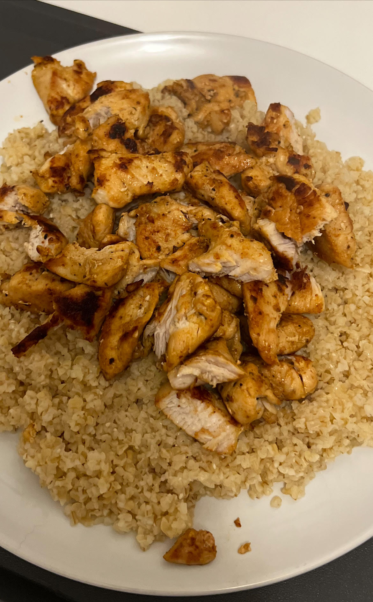

Chicken & Bulgur

Description
This is a simple dish which is high in fibre & protein. Best had after a gym workout to promote protein synthesis & replishment of glycogen stores.
Ingredients
- Chicken breast
- Bulgur wheat
- Vegetables of your choice
Steps
- Dice the chicken breast into a bowl with seasoning of your choice & set aside
- Fill a pot with water & bring to a boil
- Once boiling, add Bulgur wheat to the pot & turn down so it lightly boils
- 7 minutes after putting the Bulgur in, add some olive oil to a frying pan & begin to pre heat
- After 5 minutes the pan should be ready. Empty the chicken into the pan & break up any clumps
- After putting the chicken on, take the Bulgur off the heat & set aside with a lid on top of the pot for 10 more minutes
- Stir the chicken every 2 minutes for up to 12-15 minutes
- Once the bulgur has sat for 10 minutes, it can then be put onto the plate
- Once the chicken is cooked all the way through, it can then be emptied on top of the Bulgur wheat
- Use this moment to add any vegetables or garnish to the dish
- Once all the above is done, it is completed